Sustentación de tesis: rendición de cuentas en la FDCP-UNMSM — José Manuel Guzmán Valverde
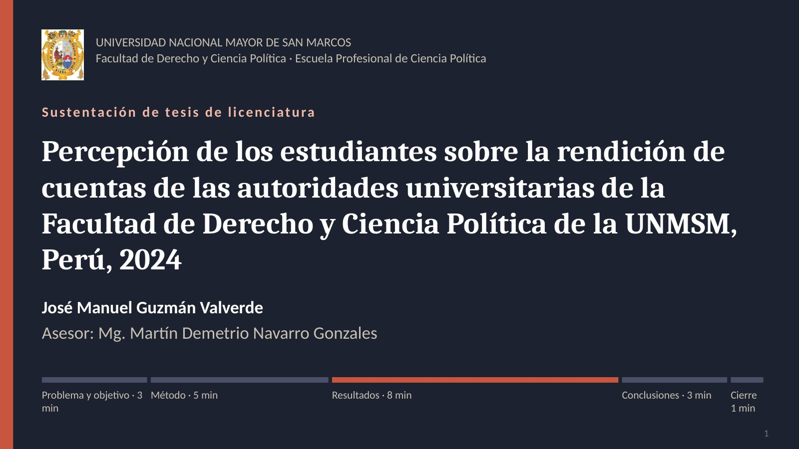
1 · UNIVERSIDAD NACIONAL MAYOR DE SAN MARCOS Facultad de Derecho y Ciencia Política · Escuela Profesional de Ciencia Política · Sustentación de tesis de licenciatura · Percepción de los estudiantes sobre la rendición de cuentas de las autoridades universitarias de la Facultad de Derecho y Ciencia Política de la UNMSM, Perú, 2024 · José Manuel Guzmán Valverde Asesor: Mg. Martín Demetrio Navarro Gonzales · Problema y objetivo · 3 min · Método · 5 min · Resultados · 8 min · Conclusiones · 3 min · Cierre · 1 min
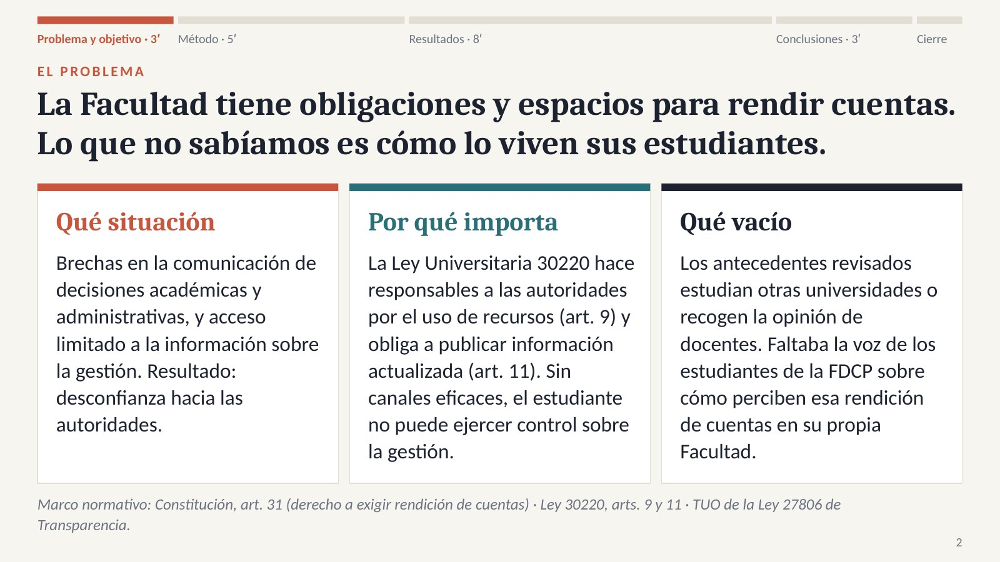
Problema y objetivo · 3′ · Método · 5′ · Resultados · 8′ · Conclusiones · 3′ · Cierre · 1′ · 2 · EL PROBLEMA · La Facultad tiene obligaciones y espacios para rendir cuentas. Lo que no sabíamos es cómo lo viven sus estudiantes. · Qué situación · Brechas en la comunicación de decisiones académicas y administrativas, y acceso limitado a la información sobre la gestión. Resultado: desconfianza hacia las autoridades. · Por qué importa · La Ley Universitaria 30220 hace responsables a las autoridades por el uso de recursos (art. 9) y obliga a publicar información actualizada (art. 11). Sin canales eficaces, el estudiante no puede ejercer control sobre la gestión. · Qué vacío · Los antecedentes revisados estudian otras universidades o recogen la opinión de docentes. Faltaba la voz de los estudiantes de la FDCP sobre cómo perciben esa rendición de cuentas en su propia Facultad. · Marco normativo: Constitución, art. 31 (derecho a exigir rendición de cuentas) · Ley 30220, arts. 9 y 11 · TUO de la Ley 27806 de Transparencia.
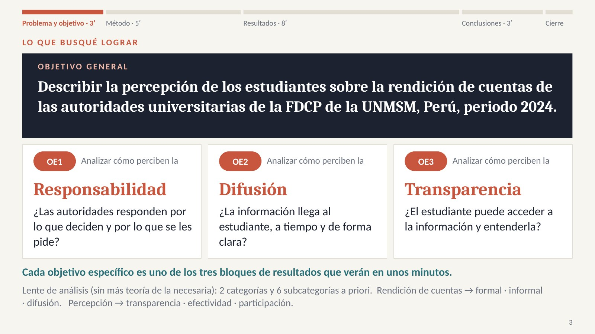
Problema y objetivo · 3′ · Método · 5′ · Resultados · 8′ · Conclusiones · 3′ · Cierre · 1′ · 3 · LO QUE BUSQUÉ LOGRAR · OBJETIVO GENERAL · Describir la percepción de los estudiantes sobre la rendición de cuentas de las autoridades universitarias de la FDCP de la UNMSM, Perú, periodo 2024. · OE1 · Analizar cómo perciben la · Responsabilidad · ¿Las autoridades responden por lo que deciden y por lo que se les pide? · OE2 · Analizar cómo perciben la · Difusión · ¿La información llega al estudiante, a tiempo y de forma clara? · OE3 · Analizar cómo perciben la · Transparencia · ¿El estudiante puede acceder a la información y entenderla? · Cada objetivo específico es uno de los tres bloques de resultados que verán en unos minutos. · Lente de análisis (sin más teoría de la necesaria): 2 categorías y 6 subcategorías a priori. Rendición de cuentas → formal · informal · difusión. Percepción → transparencia · efectividad · participación.
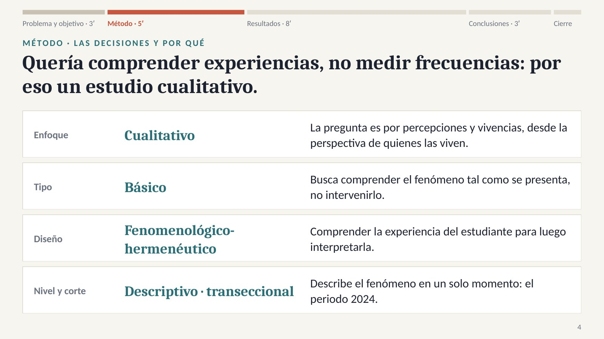
Problema y objetivo · 3′ · Método · 5′ · Resultados · 8′ · Conclusiones · 3′ · Cierre · 1′ · 4 · MÉTODO · LAS DECISIONES Y POR QUÉ · Quería comprender experiencias, no medir frecuencias: por eso un estudio cualitativo. · Enfoque · Cualitativo · La pregunta es por percepciones y vivencias, desde la perspectiva de quienes las viven. · Tipo · Básico · Busca comprender el fenómeno tal como se presenta, no intervenirlo. · Diseño · Fenomenológico-hermenéutico · Comprender la experiencia del estudiante para luego interpretarla. · Nivel y corte · Descriptivo · transeccional · Describe el fenómeno en un solo momento: el periodo 2024.
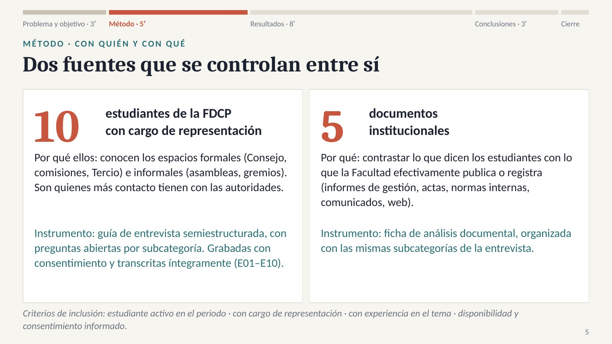
Problema y objetivo · 3′ · Método · 5′ · Resultados · 8′ · Conclusiones · 3′ · Cierre · 1′ · 5 · MÉTODO · CON QUIÉN Y CON QUÉ · Dos fuentes que se controlan entre sí · 10 · estudiantes de la FDCP con cargo de representación · Por qué ellos: conocen los espacios formales (Consejo, comisiones, Tercio) e informales (asambleas, gremios). Son quienes más contacto tienen con las autoridades. · Instrumento: guía de entrevista semiestructurada, con preguntas abiertas por subcategoría. Grabadas con consentimiento y transcritas íntegramente (E01–E10). · 5 · documentos institucionales · Por qué: contrastar lo que dicen los estudiantes con lo que la Facultad efectivamente publica o registra (informes de gestión, actas, normas internas, comunicados, web). · Instrumento: ficha de análisis documental, organizada con las mismas subcategorías de la entrevista. · Criterios de inclusión: estudiante activo en el periodo · con cargo de representación · con experiencia en el tema · disponibilidad y consentimiento informado.
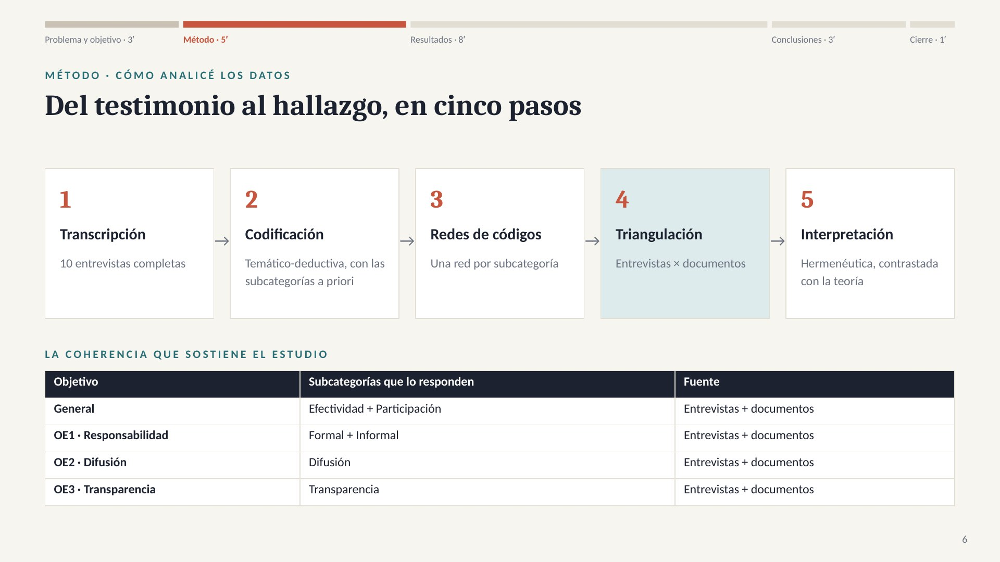
Problema y objetivo · 3′ · Método · 5′ · Resultados · 8′ · Conclusiones · 3′ · Cierre · 1′ · 6 · MÉTODO · CÓMO ANALICÉ LOS DATOS · Del testimonio al hallazgo, en cinco pasos · 1 · Transcripción · 10 entrevistas completas · → · 2 · Codificación · Temático-deductiva, con las subcategorías a priori · → · 3 · Redes de códigos · Una red por subcategoría · → · 4 · Triangulación · Entrevistas × documentos · → · 5 · Interpretación · Hermenéutica, contrastada con la teoría · LA COHERENCIA QUE SOSTIENE EL ESTUDIO
Problema y objetivo · 3′
Método · 5′
Resultados · 8′
Conclusiones · 3′
Cierre
Método · red de códigos interactiva
Red
Rendición de cuentas
Percepción
De la entrevista al hallazgo
Fragmento de entrevista
Código
Red (subcategoría)
Hallazgo y objetivo
→ siguiente red · ← anterior · clic en un código · R recorrido · I instrumento ·
Fuente: redes de códigos en ATLAS.ti (figuras 1 a 6 de la tesis) · 34 códigos
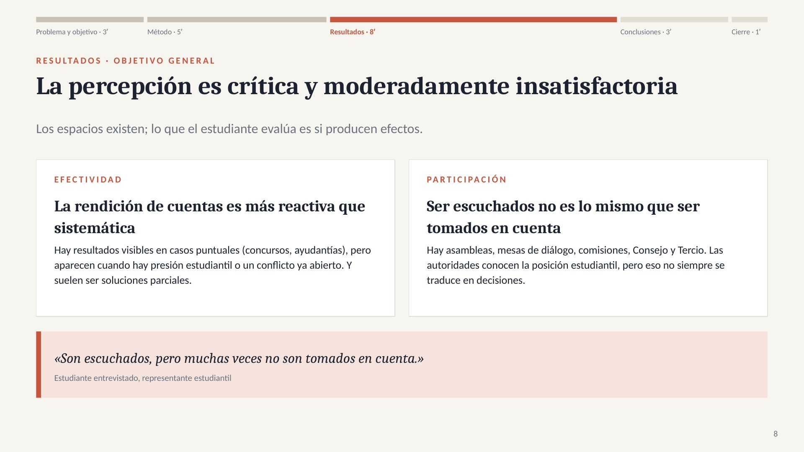
Problema y objetivo · 3′ · Método · 5′ · Resultados · 8′ · Conclusiones · 3′ · Cierre · 1′ · 8 · RESULTADOS · OBJETIVO GENERAL · La percepción es crítica y moderadamente insatisfactoria · Los espacios existen; lo que el estudiante evalúa es si producen efectos. · EFECTIVIDAD · La rendición de cuentas es más reactiva que sistemática · Hay resultados visibles en casos puntuales (concursos, ayudantías), pero aparecen cuando hay presión estudiantil o un conflicto ya abierto. Y suelen ser soluciones parciales. · PARTICIPACIÓN · Ser escuchados no es lo mismo que ser tomados en cuenta · Hay asambleas, mesas de diálogo, comisiones, Consejo y Tercio. Las autoridades conocen la posición estudiantil, pero eso no siempre se traduce en decisiones. · Pregunta: ¿Considera que sus aportes o los de sus compañeros son tomados en cuenta por las autoridades de la Facultad? «Son escuchados, pero muchas veces no son tomados en cuenta.» Respuesta de un estudiante entrevistado (cita 9:13)
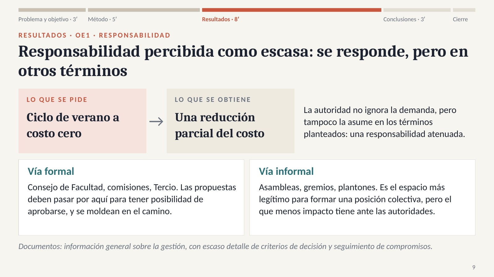
Problema y objetivo · 3′ · Método · 5′ · Resultados · 8′ · Conclusiones · 3′ · Cierre · 1′ · 9 · RESULTADOS · OE1 · RESPONSABILIDAD · Responsabilidad percibida como escasa: se responde, pero en otros términos · LO QUE SE PIDE · Ciclo de verano a costo cero · → · LO QUE SE OBTIENE · Una reducción parcial del costo · La autoridad no ignora la demanda, pero tampoco la asume en los términos planteados: una responsabilidad atenuada. · Vía formal · Consejo de Facultad, comisiones, Tercio. Las propuestas deben pasar por aquí para tener posibilidad de aprobarse, y se moldean en el camino. · Vía informal · Asambleas, gremios, plantones. Es el espacio más legítimo para formar una posición colectiva, pero el que menos impacto tiene ante las autoridades. · Documentos: información general sobre la gestión, con escaso detalle de criterios de decisión y seguimiento de compromisos.
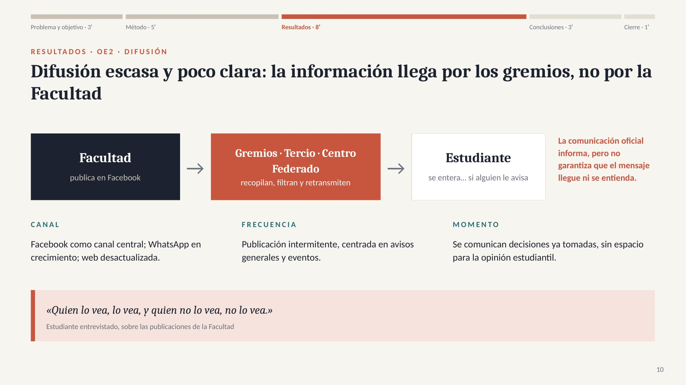
Problema y objetivo · 3′ · Método · 5′ · Resultados · 8′ · Conclusiones · 3′ · Cierre · 1′ · 10 · RESULTADOS · OE2 · DIFUSIÓN · Difusión escasa y poco clara: la información llega por los gremios, no por la Facultad · Facultad · publica en Facebook · → · Gremios · Tercio · Centro Federado · recopilan, filtran y retransmiten · → · Estudiante · se entera… si alguien le avisa · La comunicación oficial informa, pero no garantiza que el mensaje llegue ni se entienda. · CANAL · Facebook como canal central; WhatsApp en crecimiento; web desactualizada. · FRECUENCIA · Publicación intermitente, centrada en avisos generales y eventos. · MOMENTO · Se comunican decisiones ya tomadas, sin espacio para la opinión estudiantil. · Pregunta: ¿Considera que estos canales son efectivos para llegar a los estudiantes? «Quien lo vea, lo vea, y quien no lo vea, no lo vea.» Respuesta de un estudiante entrevistado, sobre las publicaciones de la Facultad (cita 9:32)
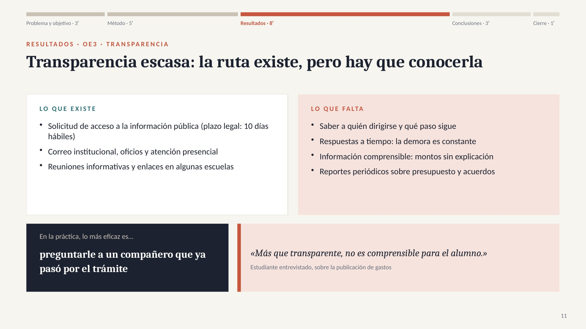
Problema y objetivo · 3′ · Método · 5′ · Resultados · 8′ · Conclusiones · 3′ · Cierre · 1′ · 11 · RESULTADOS · OE3 · TRANSPARENCIA · Transparencia escasa: la ruta existe, pero hay que conocerla · LO QUE EXISTE · Solicitud de acceso a la información pública (plazo legal: 10 días hábiles) Correo institucional, oficios y atención presencial Reuniones informativas y enlaces en algunas escuelas · LO QUE FALTA · Saber a quién dirigirse y qué paso sigue Respuestas a tiempo: la demora es constante Información comprensible: montos sin explicación Reportes periódicos sobre presupuesto y acuerdos · En la práctica, lo más eficaz es… · preguntarle a un compañero que ya pasó por el trámite · Pregunta: ¿Considera que las acciones de transparencia en la Facultad han tenido resultados concretos y visibles? «Más que transparente, no es comprensible para el alumno.» Respuesta de un estudiante entrevistado, sobre la publicación de gastos (cita 1:8)
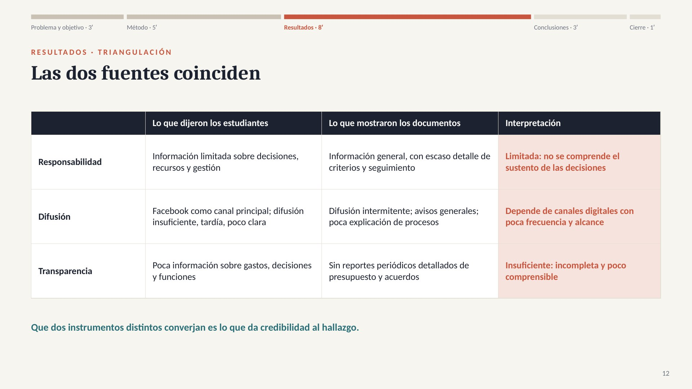
Problema y objetivo · 3′ · Método · 5′ · Resultados · 8′ · Conclusiones · 3′ · Cierre · 1′ · 12 · RESULTADOS · TRIANGULACIÓN · Las dos fuentes coinciden · Que dos instrumentos distintos converjan es lo que da credibilidad al hallazgo.
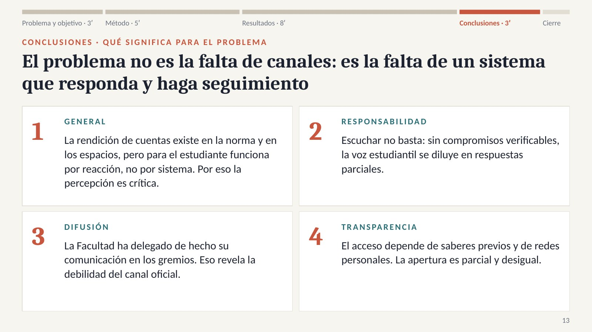
Problema y objetivo · 3′ · Método · 5′ · Resultados · 8′ · Conclusiones · 3′ · Cierre · 1′ · 13 · CONCLUSIONES · QUÉ SIGNIFICA PARA EL PROBLEMA · El problema no es la falta de canales: es la falta de un sistema que responda y haga seguimiento · 1 · GENERAL · La rendición de cuentas existe en la norma y en los espacios, pero para el estudiante funciona por reacción, no por sistema. Por eso la percepción es crítica. · 2 · RESPONSABILIDAD · Escuchar no basta: sin compromisos verificables, la voz estudiantil se diluye en respuestas parciales. · 3 · DIFUSIÓN · La Facultad ha delegado de hecho su comunicación en los gremios. Eso revela la debilidad del canal oficial. · 4 · TRANSPARENCIA · El acceso depende de saberes previos y de redes personales. La apertura es parcial y desigual.
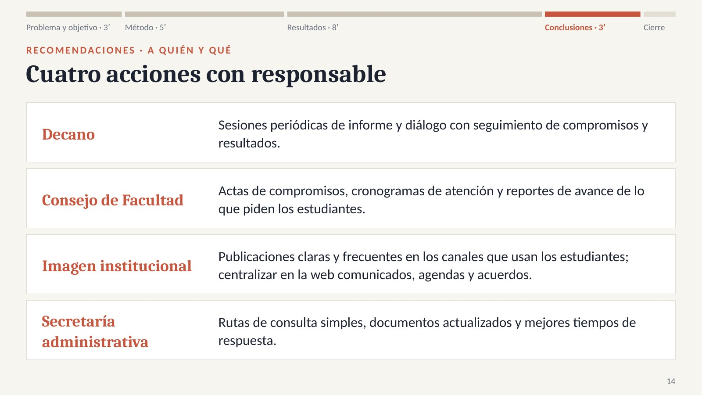
Problema y objetivo · 3′ · Método · 5′ · Resultados · 8′ · Conclusiones · 3′ · Cierre · 1′ · 14 · RECOMENDACIONES · A QUIÉN Y QUÉ · Cuatro acciones con responsable · Decano · Sesiones periódicas de informe y diálogo con seguimiento de compromisos y resultados. · Consejo de Facultad · Actas de compromisos, cronogramas de atención y reportes de avance de lo que piden los estudiantes. · Imagen institucional · Publicaciones claras y frecuentes en los canales que usan los estudiantes; centralizar en la web comunicados, agendas y acuerdos. · Secretaría administrativa · Rutas de consulta simples, documentos actualizados y mejores tiempos de respuesta.
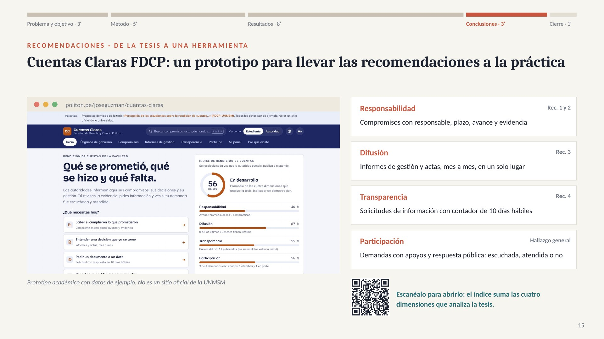
Problema y objetivo · 3′ · Método · 5′ · Resultados · 8′ · Conclusiones · 3′ · Cierre · 1′ · 15 · RECOMENDACIONES · DE LA TESIS A UNA HERRAMIENTA · Cuentas Claras FDCP: un prototipo para llevar las recomendaciones a la práctica · politon.pe/joseguzman/cuentas-claras · Prototipo académico con datos de ejemplo. No es un sitio oficial de la UNMSM. · Responsabilidad · Rec. 1 y 2 · Compromisos con responsable, plazo, avance y evidencia · Difusión · Rec. 3 · Informes de gestión y actas, mes a mes, en un solo lugar · Transparencia · Rec. 4 · Solicitudes de información con contador de 10 días hábiles · Participación · Hallazgo general · Demandas con apoyos y respuesta pública: escuchada, atendida o no · Escanéalo para abrirlo: el índice suma las cuatro dimensiones que analiza la tesis.
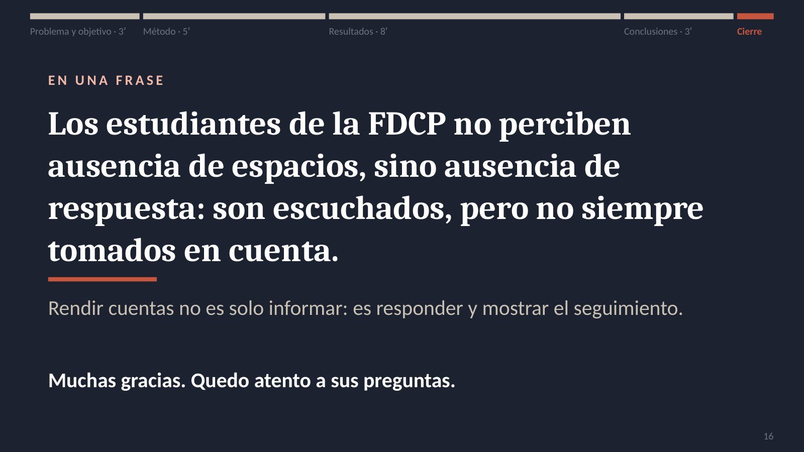
Problema y objetivo · 3′ · Método · 5′ · Resultados · 8′ · Conclusiones · 3′ · Cierre · 1′ · 16 · EN UNA FRASE · Los estudiantes de la FDCP no perciben ausencia de espacios, sino ausencia de respuesta: son escuchados, pero no siempre tomados en cuenta. · Rendir cuentas no es solo informar: es responder y mostrar el seguimiento. · Muchas gracias. Quedo atento a sus preguntas.
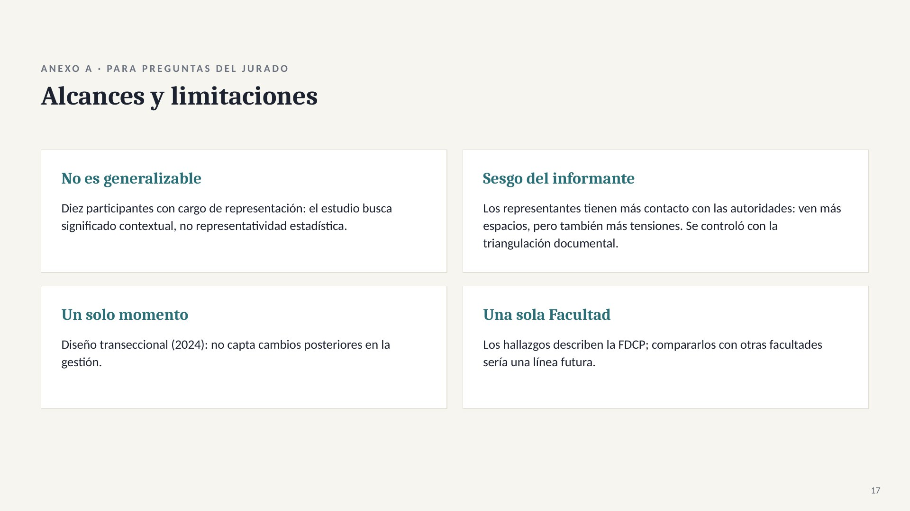
17 · ANEXO A · PARA PREGUNTAS DEL JURADO · Alcances y limitaciones · No es generalizable · Diez participantes con cargo de representación: el estudio busca significado contextual, no representatividad estadística. · Sesgo del informante · Los representantes tienen más contacto con las autoridades: ven más espacios, pero también más tensiones. Se controló con la triangulación documental. · Un solo momento · Diseño transeccional (2024): no capta cambios posteriores en la gestión. · Una sola Facultad · Los hallazgos describen la FDCP; compararlos con otras facultades sería una línea futura.
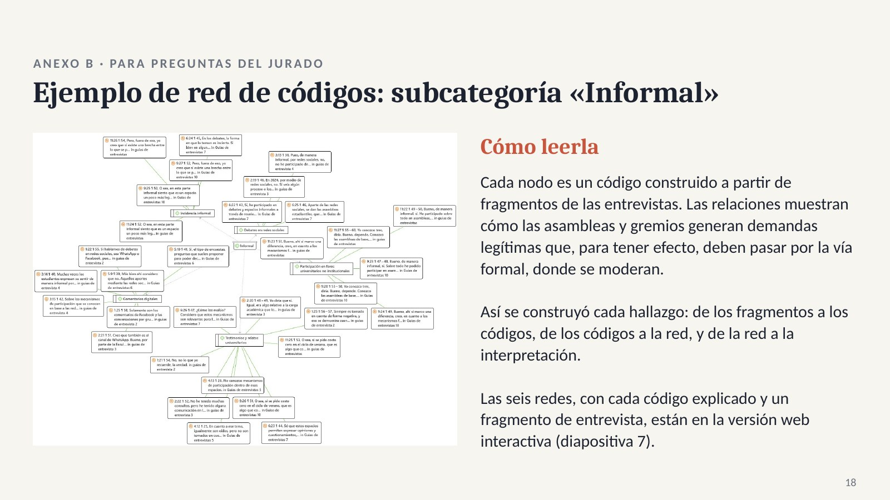
18 · ANEXO B · PARA PREGUNTAS DEL JURADO · Ejemplo de red de códigos: subcategoría «Informal» · Cómo leerla · Cada nodo es un código construido a partir de fragmentos de las entrevistas. Las relaciones muestran cómo las asambleas y gremios generan demandas legítimas que, para tener efecto, deben pasar por la vía formal, donde se moderan. Así se construyó cada hallazgo: de los fragmentos a los códigos, de los códigos a la red, y de la red a la interpretación. Las seis redes, con cada código explicado y un fragmento de entrevista, están en la versión web interactiva (diapositiva 7).
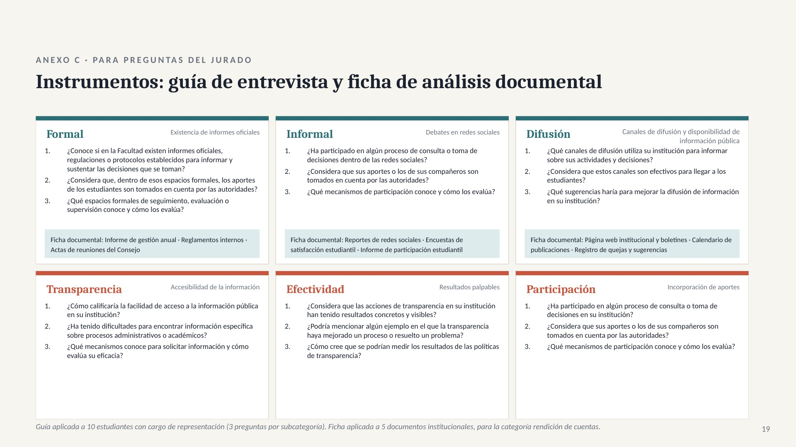
19 · ANEXO C · PARA PREGUNTAS DEL JURADO · 1 DE 2 · Instrumentos: guía de entrevista y ficha de análisis documental · Categoría rendición de cuentas · Formal · Indicador: Existencia de informes oficiales · ¿Conoce si en la Facultad existen informes oficiales, regulaciones o protocolos establecidos para informar y sustentar las decisiones que se toman? ¿Considera que, dentro de esos espacios formales, los aportes de los estudiantes son tomados en cuenta por las autoridades? ¿Qué espacios formales de seguimiento, evaluación o supervisión conoce y cómo los evalúa? · Ficha documental: Informe de gestión anual · Reglamentos internos · Actas de reuniones del Consejo · Informal · Indicador: Debates en redes sociales · ¿Ha participado en algún proceso de consulta o toma de decisiones dentro de las redes sociales? ¿Considera que sus aportes o los de sus compañeros son tomados en cuenta por las autoridades? ¿Qué mecanismos de participación conoce y cómo los evalúa? · Ficha documental: Reportes de redes sociales · Encuestas de satisfacción estudiantil · Informe de participación estudiantil · Difusión · Indicador: Canales de difusión y disponibilidad de información pública · ¿Qué canales de difusión utiliza su institución para informar sobre sus actividades y decisiones? ¿Considera que estos canales son efectivos para llegar a los estudiantes? ¿Qué sugerencias haría para mejorar la difusión de información en su institución? · Ficha documental: Página web institucional y boletines · Calendario de publicaciones · Registro de quejas y sugerencias · Guía aplicada a 10 estudiantes con cargo de representación (3 preguntas por subcategoría). Ficha aplicada a 5 documentos institucionales, para la categoría rendición de cuentas.
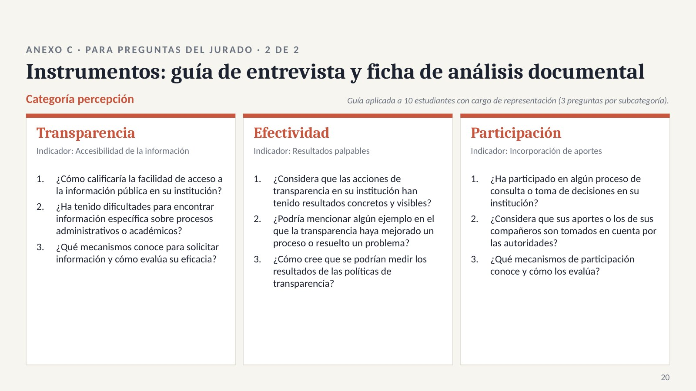
20 · ANEXO C · PARA PREGUNTAS DEL JURADO · 2 DE 2 · Instrumentos: guía de entrevista y ficha de análisis documental · Categoría percepción · Transparencia · Indicador: Accesibilidad de la información · ¿Cómo calificaría la facilidad de acceso a la información pública en su institución? ¿Ha tenido dificultades para encontrar información específica sobre procesos administrativos o académicos? ¿Qué mecanismos conoce para solicitar información y cómo evalúa su eficacia? · Efectividad · Indicador: Resultados palpables · ¿Considera que las acciones de transparencia en su institución han tenido resultados concretos y visibles? ¿Podría mencionar algún ejemplo en el que la transparencia haya mejorado un proceso o resuelto un problema? ¿Cómo cree que se podrían medir los resultados de las políticas de transparencia? · Participación · Indicador: Incorporación de aportes · ¿Ha participado en algún proceso de consulta o toma de decisiones en su institución? ¿Considera que sus aportes o los de sus compañeros son tomados en cuenta por las autoridades? ¿Qué mecanismos de participación conoce y cómo los evalúa? · Guía aplicada a 10 estudiantes con cargo de representación (3 preguntas por subcategoría).
Atajos y puntero
Siguiente
→AvPágEspacio o el botón de avanzar del puntero
Anterior
←RePág o el botón de retroceder del puntero
Videos
1.er clic: el video se abre en grande · 2.º clic: vuelve a la diapositiva · 3.er clic: avanza. K pausa o reanuda.
Pantalla completa
F o F5 · salir con Esc
Pantalla negra
B o .
Presentador
S abre una ventana con notas, siguiente diapositiva y cronómetro